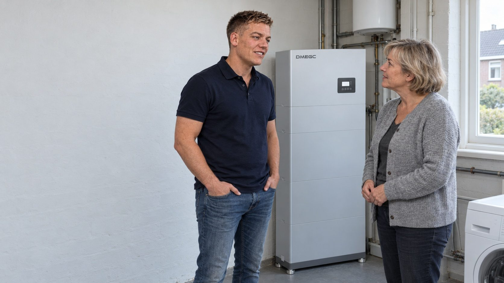
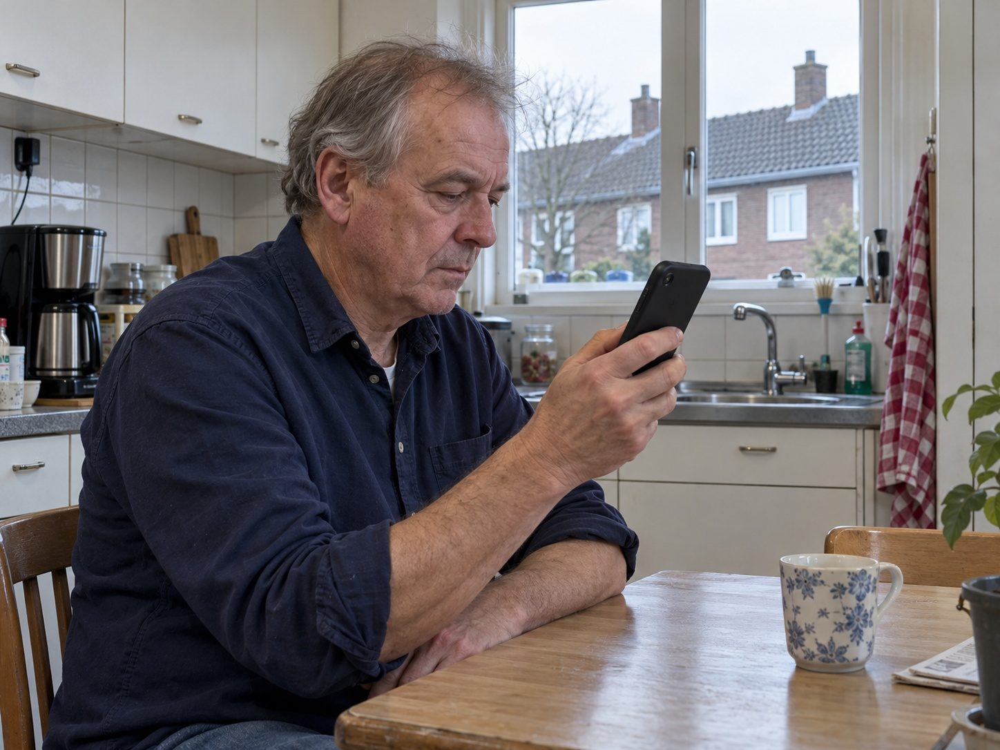

De thuisbatterij, eerst doorgerekend voor úw woning.
Een thuisbatterij bewaart de zonnestroom van overdag voor de avond. Na 1 januari 2027 levert stroom die u zelf gebruikt meer op dan stroom die u teruglevert. Of een batterij in uw situatie loont, rekenen wij uit voordat wij iets adviseren.
- Advies kosteloos en vrijblijvend
- Installatie door gecertificeerde partners
- Eén vaste adviseur tot en met de installatie

Zo werkt een thuisbatterij op een gewone dag.
Uw panelen wekken overdag het meeste op, terwijl u 's avonds het meeste verbruikt. De batterij overbrugt die uren.
-
Ochtend 07:30
De zon komt op, de batterij is leeg
De eerste zonnestroom gaat direct naar de woning: koffiezetten, douchen, de wasmachine. Wat overblijft, begint de batterij te vullen.
Laadniveau 15% -
Middag 12:30
De panelen leveren meer dan u gebruikt
Het overschot gaat in de batterij in plaats van naar het net. Zonder batterij levert u dit terug tegen een vergoeding die na 2027 een stuk lager ligt.
Laadniveau 90% -
Avond 19:00
Koken, verlichting, televisie: uit de batterij
De zon is weg, het verbruik piekt. De woning draait nu op de stroom van vanmiddag. U koopt in deze uren weinig of niets in tegen het volle tarief.
Laadniveau 45% -
Nacht 03:00
Bijna leeg, klaar voor morgen
Koelkast en standby lopen door op het laatste restje. Heeft u een dynamisch contract, dan kan de batterij in de goedkope nachturen alvast bijladen uit het net.
Laadniveau 10%
Illustratief dagverloop van een gemiddeld huishouden met zonnepanelen. Hoe het er bij u uitziet, hangt af van uw verbruik, uw opwek en uw contract. Precies dat rekenen wij door in het adviesgesprek.

Wat u krijgt.
Niet alleen een kast aan de muur. Het werk zit in de doorrekening vooraf en in de sturing erna.
Wat u overdag opwekt en niet direct gebruikt, bewaart de batterij voor de avond. U koopt dan minder stroom in. Na 1 januari 2027 is dat het verschil tussen de volle stroomprijs en een lage terugleververgoeding.
Met een dynamisch contract verschilt de stroomprijs per uur. De sturing laadt de batterij als stroom goedkoop is en gebruikt hem als stroom duur is, ook op dagen zonder zon. Wij rekenen vooraf door of dat in uw situatie iets toevoegt.
U ziet op uw telefoon wat de batterij doet: laden, leveren en het niveau van dat moment. Zo ziet u zelf terug wat de doorrekening voorspelde.
Kiest u voor een batterij, dan regelen wij levering en installatie door gecertificeerde partners. Uw adviseur blijft uw vaste aanspreekpunt tot en met de oplevering.
Groter is niet vanzelf beter.
In ons rekenmodel verplaatst elke extra kWh capaciteit minder stroom. Boven een bepaalde grens betaalt u voor opslag die u vrijwel nooit gebruikt. Die grens komt niet van uw dak, maar van wat u 's avonds en 's nachts verbruikt.
Lees hoe wij de maat bepalen Vraag de grens voor uw woning Reken uw eigen situatie door
Soms is ons advies: nog niet.
Een batterij is één manier om meer uit uw zonnestroom te halen, en niet voor elke woning de eerste. Dit zijn situaties waarin wij regelmatig adviseren om te wachten.
-
U verbruikt overdag al het meeste
Wie thuiswerkt, overdag kookt of de wasmachine op de zon laat draaien, gebruikt al veel eigen stroom direct. Dan blijft er voor de batterij weinig over om te bewaren.
-
Uw overschot is klein
Bij een klein dak of een hoog verbruik is het dagelijkse overschot beperkt, zeker in de winter. Een batterij die zelden vol raakt, verdient zich traag terug.
-
Uw woning gaat nog veranderen
Komt er een warmtepomp, een elektrische auto of een verbouwing aan, dan verandert uw verbruik. Dan is het verstandiger de maat te bepalen als dat beeld compleet is.
Ook dan is het gesprek kosteloos, en de doorrekening krijgt u mee op papier.
Wat er in de offerte staat.
Materiaal, installatie en sturing staan gespecificeerd. Achteraf komt er niets bij.
-
Technische schouw
Wij bekijken uw meterkast, uw omvormer en de plek voor de batterij: droog, vorstvrij en bereikbaar. Zo weet u vooraf waar u aan toe bent.
-
Batterij en omvormer
De maat volgt uit de doorrekening, niet uit een standaardpakket. Merk, capaciteit en garantievoorwaarden staan bij naam in de offerte.
-
Installatie en inbedrijfstelling
Montage, aansluiting en controle door een gecertificeerde installatiepartner. U krijgt uitleg over de app en de instellingen.
-
Sturing
De instellingen die bepalen wanneer de batterij laadt en levert, afgestemd op uw contract. Bij een dynamisch contract hoort daar de koppeling met de uurprijzen bij.
Vragen over de thuisbatterij.
Nee. Er verloopt op die datum geen regeling die met batterijen te maken heeft. Het einde van saldering verandert wel het rendement van opslag, maar het maakt geen haast. Wie u vertelt dat u snel moet beslissen, verkoopt iets.
Nee. Er is geen ISDE-subsidie en geen 0%-btw op een thuisbatterij. Wij rekenen daarom zonder subsidie. Verandert dat, dan leest u het in onze kennisbank.
Technisch wel. De batterij laadt dan uit het net in de goedkope uren van een dynamisch contract en levert in de dure uren. Of dat in euro's iets oplevert, hangt sterk af van uw verbruik en contract; dat rekenen wij voor u door voordat wij er iets over zeggen.
Fabrikanten geven garantie op een aantal jaren of een aantal laadcycli, afhankelijk van wat het eerst wordt bereikt, en garanderen daarbij een restcapaciteit. In onze offerte staan beide getallen en de gegarandeerde restcapaciteit bij naam, want die verschillen per merk.
Op een droge, vorstvrije en bereikbare plek, meestal de meterkast, een bijkeuken of de garage, en niet in de volle zon. Bij de technische schouw bepalen wij samen met u de beste plek.
Meestal wel, maar niet altijd zonder meerkosten. Of het eenvoudig kan, hangt af van uw omvormer en van de ruimte in uw meterkast. Laat dit vooraf bekijken als u nu panelen legt en later wilt uitbreiden.
Staat uw vraag er niet bij? Bel ons op 06 3936 9781 of lees verder in de eerlijke rekensom.
Nog … dagen tot 1 januari 2027
Weet of een batterij bij uw woning past.
Kosteloos, zonder verplichtingen, en met de doorrekening op papier.